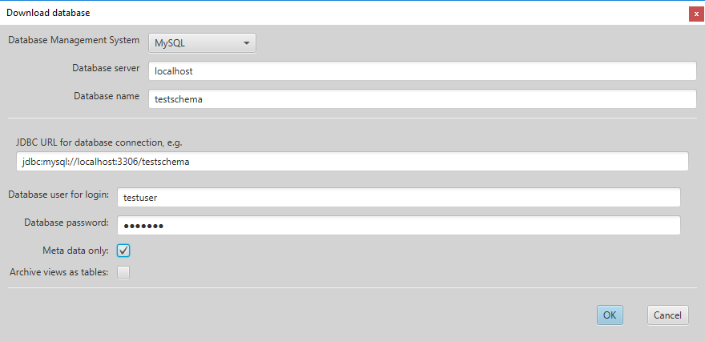
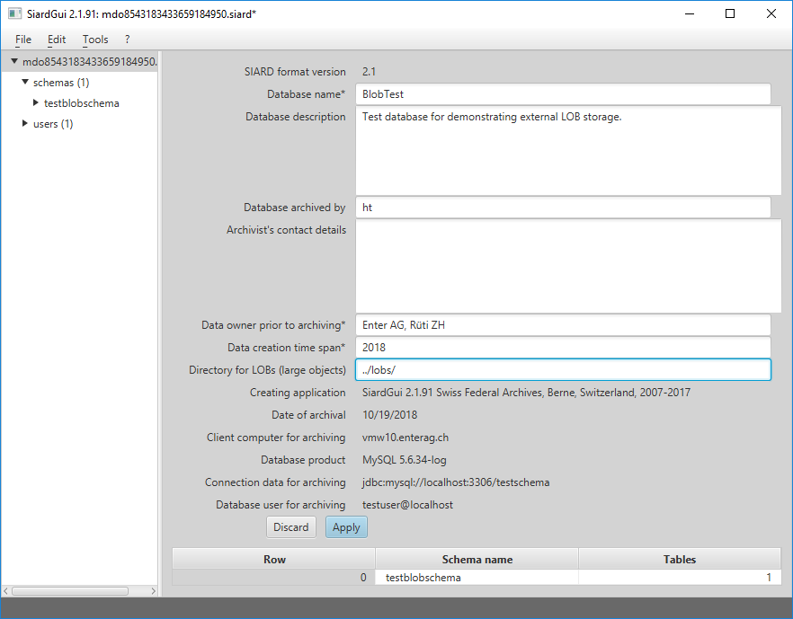
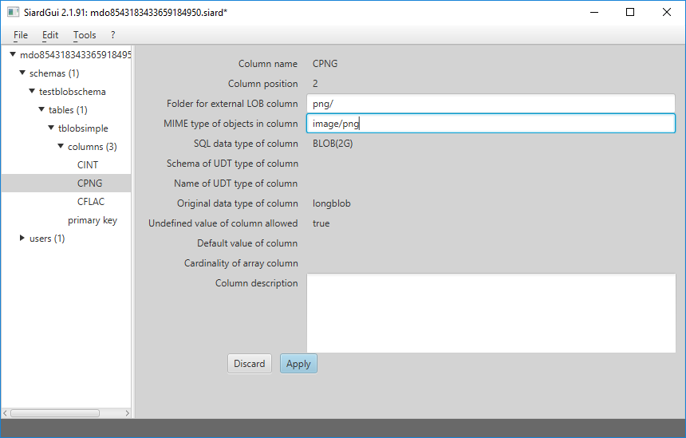
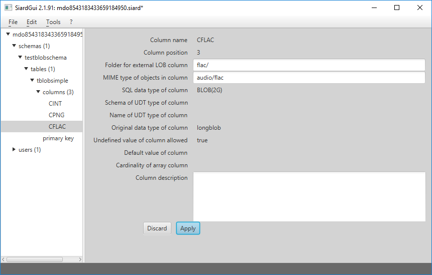
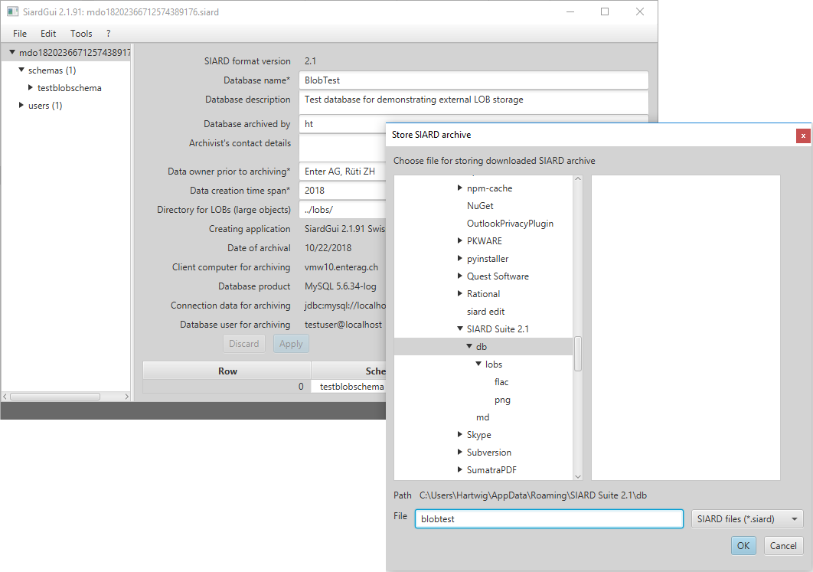

SIARD Suite 2.1 - External LOBs
The standard of the SIARD Format 2.1 states, that large objects (LOBs) of a database may be stored in the external file system instead of inside the SIARD archive. The storage location must be specified in the meta data of the SIARD archive.
If some LOBs are to be stored externally, the corresponding LOB columns must first be associated with suitable external storage locations. Afterwards the database can be downloaded.
Download only Meta Data
In order to associate storage locations with database columns, the meta data of a database must be downloaded first.

Specify External Storage Locations
The meta data fields "LOB Folder" and "MIME Type" can now be entered.
The storage location of a LOB column may be specified as an absolute file:-URI. However, it is recommended, to specify all LOB storage locations relative to a global URI in the global section of the SIARD meta data. In addition, it makes sense to specify the global meta data for database name etc. at the same time:

N.B.: All LOB Folder locations must end with a slash indicating, that they
refer to existing directories in the file system.
The global external storage location may be specified as an
absolute file:-URI. However, that would prevent moving the
SIARD archive together with its external LOBs to a different location.
Therefore it is recommended, to specify the external storage location
relative to the directory where the SIARD archive resides, which is
indicated by "../". In the example the global storage location
is given as "../lobs/". Therefore all external LOBs will be stored in
locations relative to the folder lobs in the directory, where the
SIARD archive is stored.
The storage location of a specific LOB column is then specified relative to the global external storage location:

The value "png/" in this example directs SIARD Suite to store and load
externally stored LOBs of the CPNG column of the table tblobsimple
in the existing external folder lobs/png/ relative to
the location where the SIARD file is stored.
N.B.: If a maximum number of LOBs per folder is specified in the options dialog, the individual LOB files will not be stored in lobs/png directly, but rather in numbered subfolders of lobs/png/, which contain at most the configured maximum number of LOBs.
For externally stored LOB columns a MIME type ("image/png" in the example) may be specified. This MIME type will be used by SIARD Suite to determine a suitable file name extension for the large objects. (E.g. .png for MIME type image/png.)
In a database more than one LOB column can be stored externally:

After these preparations it is advisable to display and store the meta data
thus modified as an XML file.
Download LOBs to External Locations
When such prepared meta data are available (e.g. imported from an external XML or downloaded as "meta data only") when a database is downloaded, they are used as "template" meta data. I.e. all entries for global meta data, descriptions, LOB folders etc. of the template are copied for the download of the primary data:

In this example a small SIARD file is stored referencing the BLOBs in the
subfolders lobs/png/ and lobs/flac/ of its parent folder db/:

N.B.: The Windows Explorer shows embedded meta data of the
FLAC files from the BLOBs, because the file name extension .flac is
known to it.